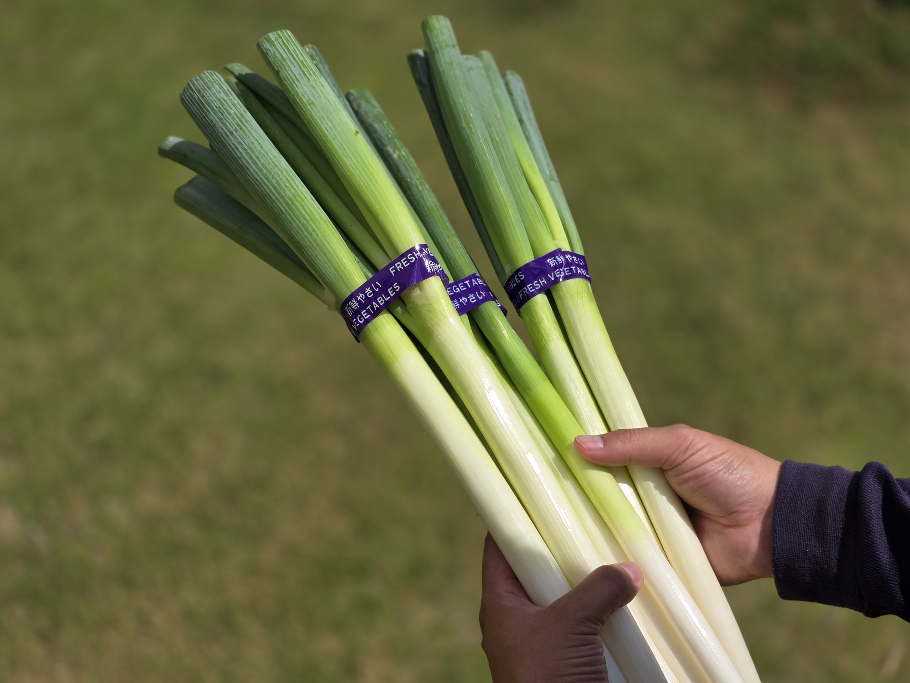
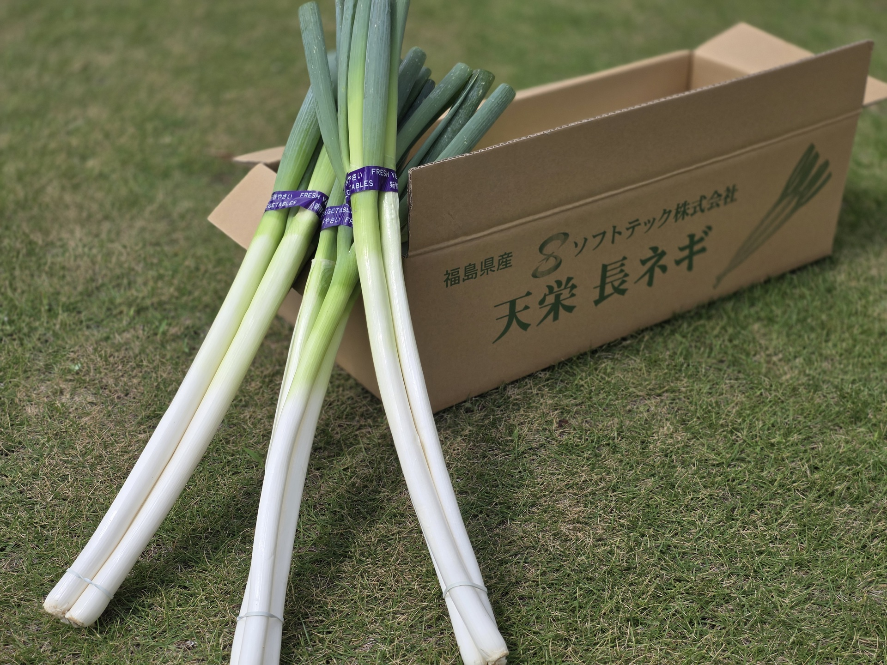
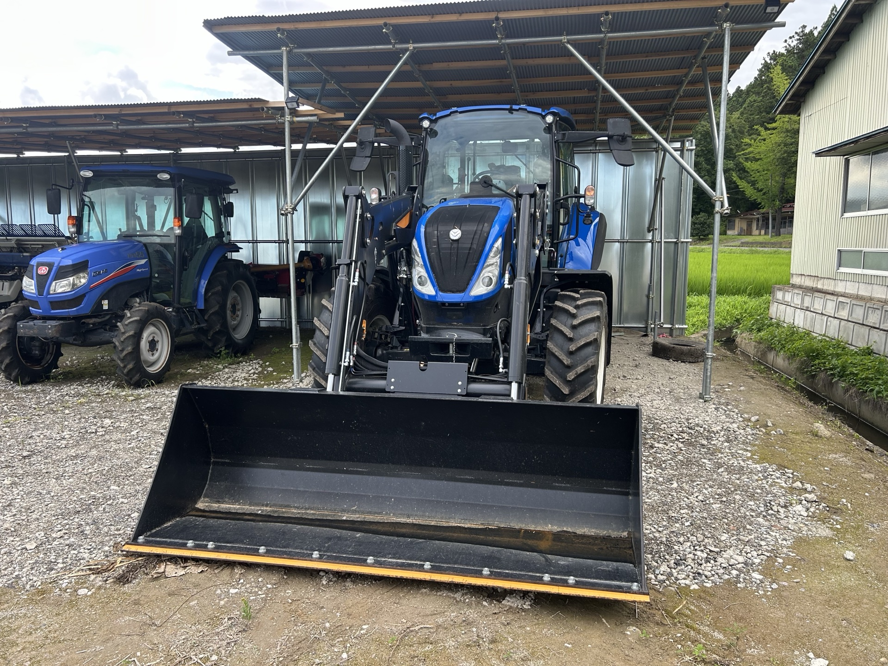

春の葉野菜
やわらかい葉物は、早朝に収穫して味を閉じ込めて出荷します。
SOFT FARM / 03
YASAI
季節の味を、そのまま。
ABOUT

旬の野菜を、新鮮なうちに。ソフトファームでは、四季折々の野菜を適正な時期に収穫し、品質を保ったまま出荷します。
化学肥料の削減や輪作、堆肥による土づくりなど、作物と土のバランスを尊重した栽培を心がけています。地域の食文化に合った品種選定も重視しています。

VARIETIES
やわらかい葉物は、早朝に収穫して味を閉じ込めて出荷します。
日照を活かした完熟出荷。甘みを重視しています。
土の力を蓄えた旬の根菜。貯蔵性にも配慮した収穫。

循環する農業
01 / SUSTAINABILITY
畜産副産物や地域の剪定枝を活用した堆肥化、緑肥の導入など、資源を循環させる取り組みをしています。
HOW TO BUY
直売所、契約飲食店、加工事業者への卸売など、様々な販売ルートをご用意しています。地域の飲食店様向けの定期納品も可能です。